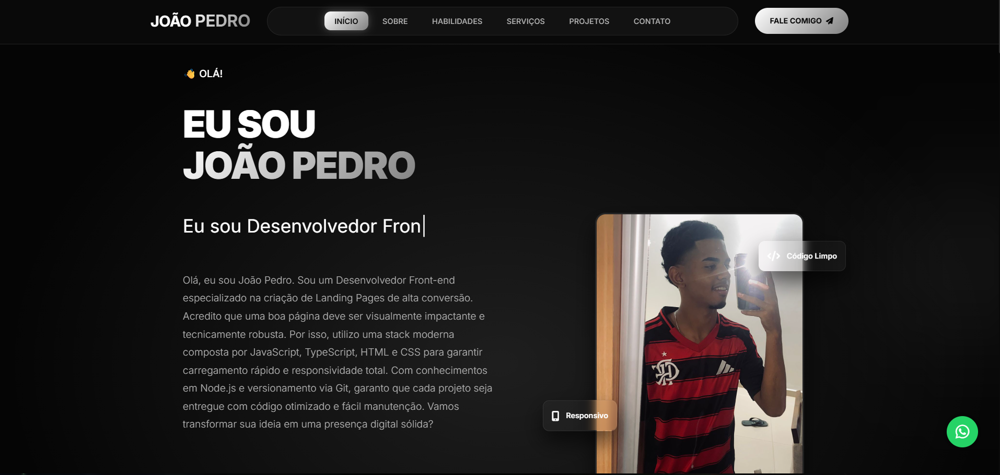
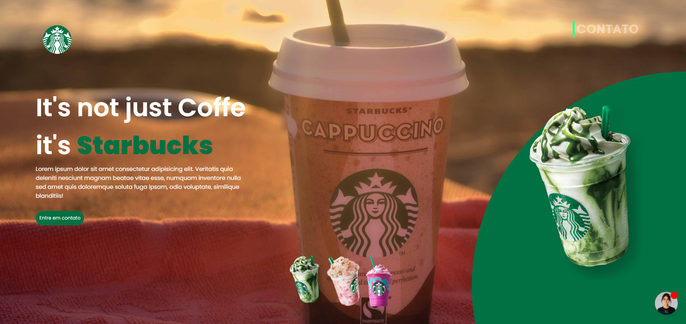

Nosso Portfólio
Sites que Transformam Negócios
Mais de 10 sites criados para empresas de todo o Brasil. Confira alguns dos nossos projetos mais recentes.
10+ Sites Criados
7 No Portfólio
5.0★ Avaliação Google

Barber Start
Página de alta conversão para curso de barbeiro.

Ouro do Cerrado
Site completo para hotelaria e reservas.

Justly Advocacia
Design sóbrio e elegante para escritório jurídico.

Visitar
Portfólio
Portfólio profissional para desenvolvedor front-end.

Site Globo Sat Arinos
Site institucional para a empresa Globo Sat Arinos.

Visitar
Starbucks
Landing page para a marca Starbucks integrado com IA.

Landing page Patins
Landing page para compra de patins, animada.